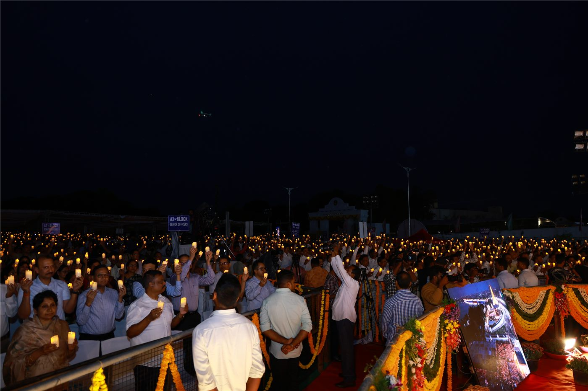

이스라엘 극우 정치인, 서안지구 기념비 훼손… 네타냐후도 거리 두기
이스라엘의 한 극우 성향 정치인이 서안지구에서 팔레스타인 측 기념비를 망치로 훼손한 사실이 알려졌다. 베냐민 네타냐후 총리 측도 이 행위와 선을 그었다.
방문연 기자 · 2026.09.05
橋국제

해당 정치인은 서안지구를 방문한 자리에서 기념비를 직접 훼손하는 장면을 공개했다. 영상이 확산되면서 이스라엘 안팎에서 비판이 이어졌다.
광고 문의 · 300×250이스라엘 총리실 주변에서는 개인의 행동이며 정부 방침과 무관하다는 취지의 언급이 나왔다. 정부 차원의 징계나 수사 착수 여부는 확인되지 않았다.
팔레스타인 자치정부는 문화재 및 추모 시설에 대한 훼손 행위라며 국제사회의 대응을 요구했다. 관련 국제기구의 공식 입장은 26일 오전 현재 나오지 않았다.
서안지구에서는 정착촌 확장과 이에 따른 마찰이 이어져 왔다. 이번 사안은 그 긴장 위에서 벌어진 개별 사건이지만, 상징물을 겨냥했다는 점에서 반발이 컸다.
본지는 사실관계가 확인된 부분만 전한다. 훼손 행위의 촬영과 공개, 그리고 총리 측의 거리 두기 언급이 확인된 사항이다.
출처·참고 (사실 확인용 — 본문은 직접 재작성)
· 경향신문 2026-08-25 — https://www.khan.co.kr/article/202608252155001/
· 경향신문 2026-08-25 — https://www.khan.co.kr/article/202608252155001/